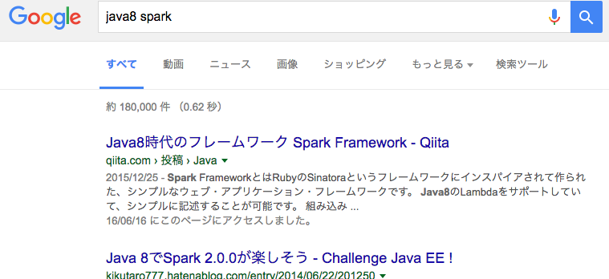
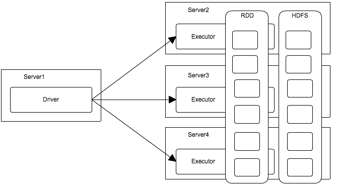
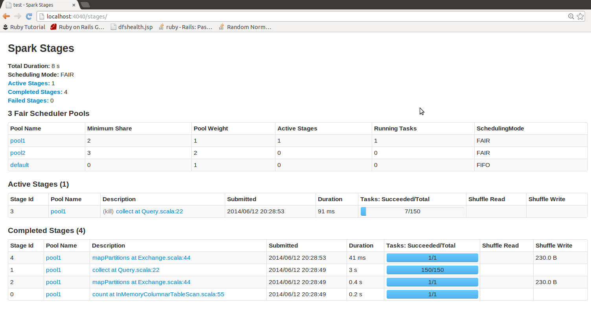

<!doctype html>
<html>
	<head>
		<meta charset="utf-8">
		<meta name="viewport" content="width=device-width, initial-scale=1.0, maximum-scale=1.0, user-scalable=no">

		<title>Apache Spark as Batch</title>

		<link rel="stylesheet" href="css/reveal.css">
		<link rel="stylesheet" href="css/theme/black.css">

		<!-- Theme used for syntax highlighting of code -->
		<link rel="stylesheet" href="lib/css/zenburn.css">
		<script src="https://cdn.rawgit.com/knsv/mermaid/0.5.1/dist/mermaid.min.js"></script>
		<script>mermaid.initialize({startOnLoad:true});</script>
		<style>
			.reveal .slides  {
				text-align: left;
			}
			.reveal h1,
			.reveal h2,
			.reveal h3,
			.reveal h4,
			.reveal h5,
			.reveal h6 {
				text-transform: none;
			}
			.reveal h2 {
				font-size:120%;
			}
		</style>
		<!-- Printing and PDF exports -->
		<script>
			var link = document.createElement( 'link' );
			link.rel = 'stylesheet';
			link.type = 'text/css';
			link.href = window.location.search.match( /print-pdf/gi ) ? 'css/print/pdf.css' : 'css/print/paper.css';
			document.getElementsByTagName( 'head' )[0].appendChild( link );
		</script>
	</head>
	<body>
		<div class="reveal">
			<div class="slides">
		      <section data-markdown=""
            data-separator="^\n---$"
            data-separator-vertical="^\n>>>$">
        <script type="text/template">

Batch FrameworkとしてのApache Spark
----------------------------------

@koduki

---

## 自己紹介
- - -

</img>
- [@koduki](https://twitter.com/koduki)
- 天神あたりで働くScalaやJavaが好きなエンジニア
- でもRubyの方がもーっと好きです

---

## 今日話さないこと
- - -

- [Spark framework](http://sparkjava.com/)
</img>

---

## 今日話さないこと
- - -

- [SPARC](https://ja.wikipedia.org/wiki/SPARC)

</img>

---

## 今日話さないこと
- - -

- Apache Sparkによる機械学習
- Apache Sparkによるストリーム入門

---

## 今日話すこと
- - -

- Apache Sparkによる「ふつう」のバッチ開発

---

## バッチフレームワークの分類
- - -

- プロセス型
	- Spring Batch/Terasoluna
	- 自作 or フレームワークなんて使わない！
- コンテナ型
	- JavaEE jBatch(JSR-352)
	- Hadoop(MapReduce, Spark)

---

## プロセス型バッチのメリット
- - - 

- シンプル
- 既存ジョブ管理システム等との相性

---

## コンテナ型バッチのメリット
- - - 

- 分散環境
- リソース管理

---

## Apache Sparkって何？
- - -

- Hadoopファミリの一つ
- ポストHadoop MapReduce
- 分散並列環境でのジョブ実行/ストリーム処理が得意
- インメモリ処理が中心でMapReduceよりずっと高速
- ScalaやPythonでよく利用されるがJavaでも動く

---

# Javaでも動く！

---

## Javaで書くメリット
- - -

- Java8のStream APIとの高い類似性 #どっちもScala由来！
- 既存のJavaによるビジネスロジックを移植しやすい
- Scalaを導入するより、上司や周りを説得しやすい

---

## SparkによるWordCound
- - -

- まずはSparkでHelloWorldに相当するWordCountを実装

```[scala]
// Driver(シングルスレッド/単一マシンでの実行)
val sparkConf = new SparkConf()
		.setMaster("local")
		.setAppName("wordCount");
val sc = new SparkContext(sparkConf);
// ここからExecutor(マルチスレッド/分散マシン上での実行になる)
sc.parallelize(List(
		("Nanoha", 19),
		("Fate", 19),
		("Vivio", 9)))
	.filter(x -> x._2() < 10)
	.map(x -> "Magical girl " + x._1())
	.foreach(x -> println(x));
// Driver(シングルスレッド/単一マシンでの実行)
sc.stop();
```

---

## ScalaによるWordCound
- - -

- ScalaによるWordCountを実装。ほとんど変わらない

```[scala]
// WordCount
sc.parallelize(List(
		("Nanoha", 19),
		("Fate", 19),
		("Vivio", 9)))
		.filter(x -> x._2() < 10)
		.map(x -> "Magical girl " + x._1())
		.foreach(x -> println(x));
```

---

## Sparkの実行モデル
- - -

- Spark側のコードはマルチスレッドかつ分散環境で動いている
- コードは通常プロセスであるDriverと分散処理プロセスであるExecutorに分かれて実行される
- ExecutorではRDDと呼ばれる分散並列コレクションに対して処理を行う
- 実際の処理はExecutor内でさらにマルチスレッドで行われる

---

## ExecutorとDriver
- - -

</img>

---

## 変換とアクション
- - -

- SparkにはRDDを別のRDDに変換する「変換(Transformation)」と、RDDに対して処理を行う「アクション(Action)」がある
- mapやfilterといった「変換」はStreamAPI同様に遅延実行なので、foreachやreduce、countといった「アクション」が走るまで実際の処理はされない
- 変換は再計算される可能性があるので、副作用のない実装にする必要がある

---

## どうやって実行するのか？

- - -

- Javaコマンドからも実行できるが、通常はspark-submitコマンドを使う
- スケジューラにアプリケーションを配布して実行する
- Driver/Executorの処理が終わるまで返ってこないので、Bashや既存ジョブマネとも連携できる

```[bash]
${SPARK_HOME}/bin/spark-submit \
  --master <master-url> \
  --class <main-class>
  --name <name>
  ... # other options
  <application-jar> \
  [application-arguments]
```

---

# 業務処理の実装例

---

## 業務処理とSpark
- - -

- Webで見つかる事例としては機械学習やログ解析/データサイエンスが多い
- ただ、サンプルを見たとおり、ほぼ普通のScalaなのでふつうの業務処理も書ける

---

## よくある業務処理１ - シンプルな集計
- - -

- 以下のようなフォーマットのファイルを読み込んで、地域別に集計をしたい
- 業界によっては「コントロールブレイク」とかカッコイイ言い方するやつ

<table>
	<tr><th>地域</th><th>事業</th><th>人数</th></tr>
	<tr><td>東京</td><td>製造</td><td>100</td></tr>
	<tr><td>福岡</td><td>営業</td><td>140</td></tr>
	<tr><td>福岡</td><td>製造</td><td>10</td></tr>
</table>

---
## 地域別集計例

```[java]
        JavaRDD<Tuple3<String, String, Integer>> input = sc.textFile("item.csv")
								.map(line -> line.split(","))
								.map(xs -> new Tuple3<>(xs[0], xs[1], Integer.parseInt(xs[2])))

        input.mapToPair(xs -> new Tuple2(xs._1(), xs))
                .groupByKey()
                .map(xs -> {
                    // 型推論が何故かうまくいかない
                    Tuple2<String, Iterable<Tuple3<String, String, Integer>>> item = (Tuple2<String, Iterable<Tuple3<String, String, Integer>>>) xs;
                    Stream<Tuple3<String, String, Integer>> stream = StreamSupport.stream(item._2().spliterator(), true);
                    int sum = stream.collect(Collectors.summingInt(x -> x._3()));

                    return new Tuple2<>(item._1(), sum);
                })
                .foreach(x -> System.out.println(x));
```

結果:
```
(東京,100)
(福岡,150)
```

---

## よくある業務処理2 - マッチング処理
- - -

- Joinをつかう

---

## よくある業務処理3 - 外部にリクエストを投げる
- - -

- 特に気にせず普通に投げることができる
- ただし、受ける側に大量リクエストを投げることになるので注意

---

## よくある業務処理4 - データーベースの利用
- - -

- SparkはRDBのデータもDataFrameを使い簡単に処理できる
- SparkのAPIだけではなく、SQLの利用も可能
- RDBとJSONファイるをJOINする変態的なことも出来る

---

## DataFrame
- - -

- RDDをさらに抽象化した高レベルAPI. Spark2.0ではこちらが主流の見込み
- 実行計画を取り最適化されるので、RDDよりも高速
- SparkのAPIはもちろんSQLでアクセスすることも可能
- 複数のデータソースをとれる(RDB, JSON, CSV...)

---

## DataFrameによるRDBアクセス
- - -

```[java]
String sql = "SELECT MIN(id) as min, MAX(id) as max FROM users";
long min, max;
try(Connection con = DriverManager.getConnection(url, user, password);Statement st = con.createStatement();ResultSet rs = st.executeQeury(sql)){
	rs.next();
	min = rs.getLong("min");
	max = rs.getLong("max");
}
Map<String, String> options = new HashMap<>();
options.put(url, "jdbc:mysql://localhost");
options.put("dbtable", "users");
options.put("partitionColumn", "id");
options.put("lowerBound", 0);
options.put("upperBound",1000);
options.put("numPartitions", 100); // 100並列でSQLを投げる

DataFrame df = sc.read.format("jdbc").options(options).load();
df.select("age")
	.filter(x -> x < 17)
	.count();
```

---

## 実際に投げるSQL例
- - -

- 単純にクエリを分割することで各レコードへの並行処理を実現

```sql
SELECT "KEY" ,,, FROM A_TABLE WHERE ID < 33333
```

---

## DataFrameの苦手なこと
- - -

- トランザクション周りは弱い
- RDBにアクセスする場合、JDBCなので性能問題に注意
- カラム数を増やすと結構遅くなる

---

## その他よく使うAPI
- - -

<table>
	<tr><td>map</td><td>普通のmap</td></tr>
	<tr><td>flatMap</td><td>mapの戻り値をflattenしたRDDを返す</td></tr>
	<tr><td>filter</td><td>任意の条件でフィルタしたRDDを返す</td></tr>
	<tr><td>foldByKey</td><td>キー毎に畳み込み演算</td></tr>
	<tr><td>sortByKey</td><td>キーでソート</td></tr>
	<tr><td>zip</td><td>RDDをセットにしたRDDを返す</td></tr>
	<tr><td>union</td><td>2つのRDDを結合したRDDを返す</td></tr>
</table>

---

## 書くときの注意点
- - -

- マルチスレッドであることを意識する
	- スレッドセーフじゃないフィールド値等を触らない
- 分散環境であることを意識する
	- インスタンスは初期化されているいかもしれない
- 遅延実行であることを意識する
	- 書いてある順番で実行されるとは限らない

---

# なぜSparkを使うのか？

---

## なぜSparkを使うのか？
- - -

- 単に並列コレクション操作がしたいだけならScala単独で可能
- 巨大なメモリが欲しいなら2000万円くらい出して6TBくらいのサーバを買う手もある
	- EC2で揃えても6TBだとr3を25台で月額500万円近くなので高すぎる値段ではない
- ではSparkに何を期待するのか？

---

## Sparkを使うメリット
- - -

- 分散環境による冗長性とスケールアウト
- 強力なモニタリング/レポート機能
- Hadoopファミリとの連携

---

## メリット１: 分散環境による冗長性とスケールアウト
- - -

- 台数を増やすことで一時的に性能を上げれる
	- 月末だけ処理が重いとか
- １台が死んでもジョブ全体は死なない
- Active/Actice構成を自作するのは結構面倒
	- 上手に運用するための制約が必要になる

---

## メリット2: 強力なモニタリング/レポート機能1

- 付属のSpark WebUIで動いてる処理や実行時間が可視化されてる

</img>

---

## メリット2: 強力なモニタリング/レポート機能2

- Cloudera Managerによりリソースのモニタリングも可能

</img>

---

## メリット3： Hadoopファミリとの連携

- HDFSとYARNにより他のHadoopファミリと統合/連携が容易
- 特にCDHとClouderaManagerを使うことで導入と管理を一元化できる
- HDFSを基盤とすることで複数のアプリケーション間でデータ転送がなくなる

---

## メリット3: その他便利そうなCDHツール群

全部の検証はできてないけど、下記のツール当たりが有用そう

<table>
	<tr><th>名称</th><th>概要</th></tr>
	<tr><td>Spark Streaming</td><td>ストリーム処理</td></tr>
	<tr><td>Spark SQL</td><td>HDFS/RDDへのSQLアクセス. JDBCも可</td></tr>
	<tr><td>Spark GraphX</td><td>neo4jのようなグラフ分析</td></tr>
	<tr><td>Hue</td><td>HDFS上のデータ表示や管理/Oozieとの連携</td></tr>
	<tr><td>Oozie</td><td>ワークフロースケジューラ. いわゆるジョブ管理ツール</td></tr>
	<tr><td>Flume</td><td>ログ集約基盤</td></tr>
	<tr><td>Sqoop</td><td>HDFSとRDBの間のデータのインポート/エクスポート</td></tr>
</table>
---

# まとめ

---

## まとめ
- - -

- Apache Sparkによる普通の業務バッチは結構簡単に書けそう
- 単なるプログラミングモデル以上に、エコシステムが出来ているので、運用面の強みが期待できる
- ただし、クラスタの運用はツラいとも聞くので本格運用したらまた違うかも
    　
	　</script>
      </section>
			</div>
		</div>

		<script src="lib/js/head.min.js"></script>
		<script src="js/reveal.js"></script>


		<script>
			// More info https://github.com/hakimel/reveal.js#configuration
			Reveal.initialize({
				history: true,

				// More info https://github.com/hakimel/reveal.js#dependencies
				dependencies: [
					{ src: 'plugin/markdown/marked.js' },
					{ src: 'plugin/markdown/markdown.js' },
					{ src: 'plugin/notes/notes.js', async: true },
					{ src: 'plugin/highlight/highlight.js', async: true, callback: function() { hljs.initHighlightingOnLoad(); } }
				]
			});
		</script>
	</body>
</html>
